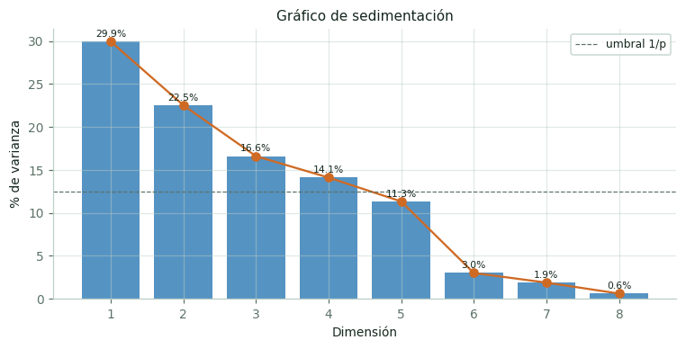
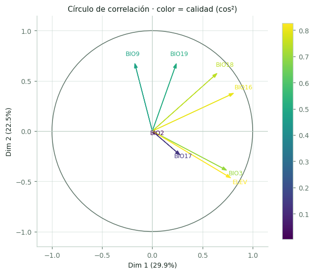
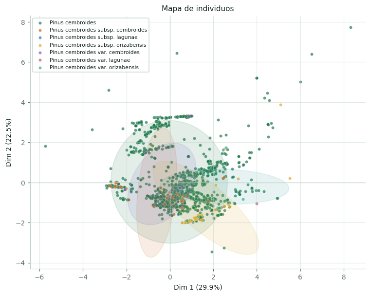
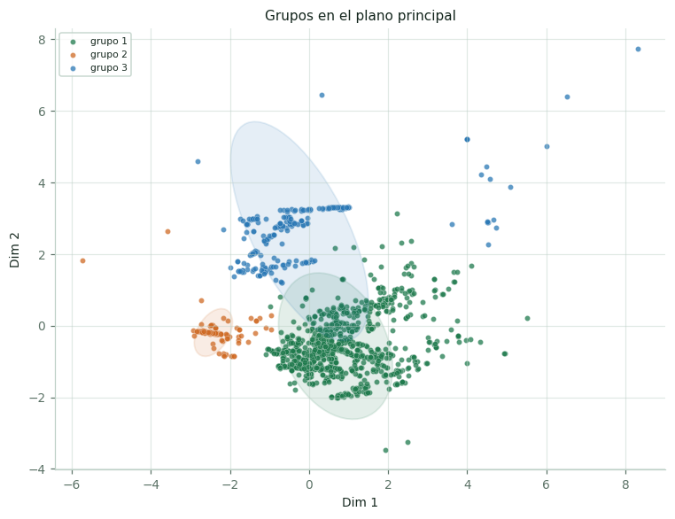
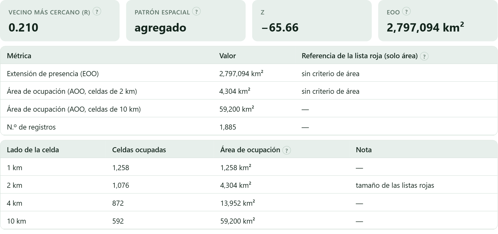
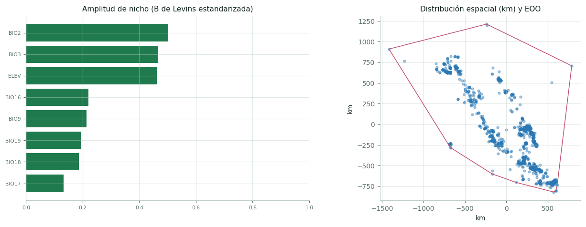
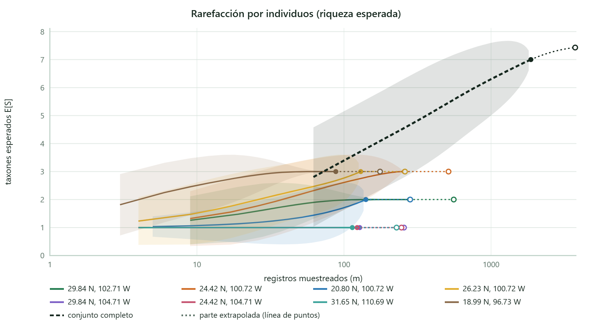
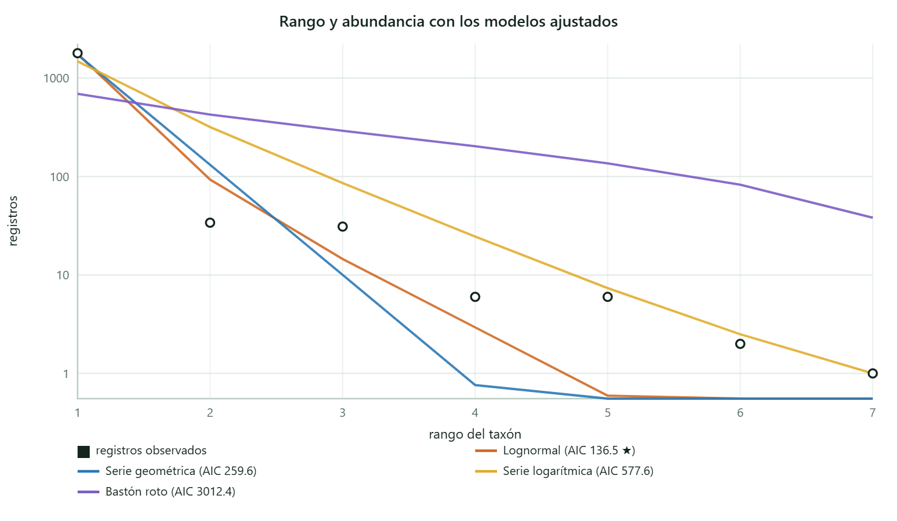

Cuatro familias de métodos sobre la misma tabla: ordenación, agrupamiento, métricas del área de distribución y del nicho, y diversidad. Todo lo que se puede decir de una especie antes de ajustar un modelo de distribución.
Hasta aquí cada variable se miró por separado. Este bloque las mira juntas: qué ejes de variación ambiental existen, si los registros forman grupos, qué tan grande es el área que ocupan y cuánta variedad hay dentro de ella. Todo se calcula sobre la tabla del Bloque 5, con las variables que eligió el Bloque 6, y empieza pulsando Preparar datos →, que estandariza cada variable a media cero y desviación uno —indispensable cuando se mezclan milímetros con grados y con metros—.
Con ocho variables correlacionadas, los registros no llenan un espacio de ocho dimensiones: se apiñan cerca de una superficie de menos dimensiones. El ACP busca los ejes de esa superficie —combinaciones de las variables originales— ordenados por la cantidad de variación que capturan. El primero resume todo lo que se pueda con una sola cifra; el segundo, lo más que quede, y así.


En el ejemplo, la dimensión 1 (29.9 % de la varianza) está construida sobre BIO16 —lluvia del trimestre más húmedo— con 27.4 % de contribución, la altitud con 25.5 %, la isotermalidad con 22.9 % y BIO18 con 17.4 %: es un eje de humedad y altura. La dimensión 2 (22.5 %) la forman BIO9 (25.1 %) y BIO19 (25.0 %), temperatura y lluvia del trimestre más seco: un eje de condiciones de la estación seca. Entre los dos ordenan la mitad de la variación ambiental de la especie.

La pregunta del agrupamiento es si los registros se reparten en conjuntos con ambiente distinto. La app la contesta en tres pasos, y conviene hacerlos en orden.

| Medida de validación | Cómo se lee |
|---|---|
| Silueta media | De −1 a 1. Por convención: arriba de 0.7 estructura fuerte, de 0.5 a 0.7 razonable, de 0.25 a 0.5 débil, por debajo sin estructura real. En el ejemplo vale 0.422: grupos débiles pero reconocibles, que es lo habitual con datos ambientales continuos. |
| Índice de Dunn | Cuanto mayor, mejor separados. No tiene escala aceptada: sirve para comparar particiones del mismo conjunto, no para juzgar una sola. |
| Correlación cofenética | Solo para el agrupamiento jerárquico: qué tan fielmente el dendrograma representa las distancias originales. Arriba de 0.8 se considera buena; en el ejemplo, 0.662. |
Un grupo ambiental reúne sitios con clima parecido, no linajes. Puede coincidir con una subespecie —y entonces es un resultado interesante— o cruzarla por completo. Antes de darle nombre biológico a un grupo, mira dónde cae en el mapa y qué taxones contiene: la app permite colorear el mapa del Bloque 4 por grupo.
Mientras el ACP trabaja con variables continuas, el análisis de correspondencias trabaja con tablas de conteos: taxón × tipo de clima de Köppen, taxón × estado, grupo × clase de suelo. Responde a preguntas del tipo «¿qué subespecie está asociada a qué clima?», y las dibuja en un mapa donde la cercanía entre una fila y una columna significa asociación.
Con el ejemplo, la tabla taxón × Köppen confirma lo que ya sugería el Bloque 5: la especie en sentido amplio se concentra en el clima árido de estepa frío, mientras los infrataxones del centro-oriente aparecen asociados a los climas templados con invierno seco.
Tres medidas describen el área que ocupa la especie, y las tres se usan en evaluaciones de riesgo.

| Métrica | Qué es y cómo se lee |
|---|---|
| Extensión de la presencia (EOO) | El área del polígono convexo mínimo que envuelve todos los registros. Mide la amplitud geográfica, no el hábitat ocupado: incluye ciudades, mares y desiertos que hay entre las poblaciones. En el ejemplo, 2,797,094 km². |
| Área de ocupación (AOO) | La suma del área de las celdas que contienen al menos un registro. En el ejemplo: 1,258 km² con celdas de 1 km, 4,304 km² con celdas de 2 km —el tamaño que usan las listas rojas—, 13,952 km² con 4 km y 59,200 km² con 10 km. |
| Vecino más cercano (R) | El índice de Clark y Evans: 1 significa distribución al azar, menos de 1 agregada, más de 1 regular. En el ejemplo vale 0.210 con Z = −65.7: fuertemente agregada. |
El AOO depende del muestreo tanto como de la especie. Una especie bien colectada tiene más celdas ocupadas que una igual de extendida pero poco colectada. Los umbrales de las listas rojas (AOO < 2,000 km², EOO < 20,000 km² para «vulnerable») están pensados para inventarios completos, y un umbral por sí solo no asigna una categoría: los criterios exigen además fragmentación, declive o fluctuación.
La agregación también mide esfuerzo. Un R de 0.21 dice que los puntos están muy amontonados, pero parte de ese amontonamiento son colectas repetidas junto a carreteras y en sierras bien estudiadas. Depurar duplicados (Bloque 3) mejora la estimación; eliminarla del todo es imposible con datos de herbario.
La amplitud de nicho de Levins mide, variable por variable, si la especie usa un rango estrecho o amplio de condiciones respecto al disponible; su versión estandarizada va de 0 a 1 y permite comparar variables entre sí. El solapamiento —D de Schoener e I de Hellinger, también de 0 a 1— compara el nicho de dos taxones o de dos grupos: cuánto comparten del espacio ambiental.

La última sección aplica el instrumental clásico de diversidad de comunidades —Shannon, Simpson, números de Hill, rarefacción, diversidad beta— a la tabla de registros, tomando como «sitios» celdas de una rejilla, bandas de altitud, estados o los grupos del agrupamiento.
En una colección de registros de presencia, el número de registros de un taxón mide esfuerzo de muestreo, no abundancia. Una especie con 800 registros no es más abundante que una con 80: puede estar mejor colectada, ser más llamativa o vivir junto a una carretera. Los índices de diversidad se calcularon para comunidades muestreadas con esfuerzo comparable, y aquí se aplican a datos que no cumplen ese supuesto.
Sirven, con dos condiciones: que compares sitios con esfuerzo parecido —o que uses rarefacción para igualarlo—, y que digas en el texto qué estás midiendo. Con los datos del ejemplo, lo que se mide es la diversidad de infrataxones del piñonero, no la de una comunidad vegetal.
Con celdas de rejilla como sitios, el ejemplo da 31 sitios × 7 taxones y 1,867 registros. La riqueza observada del conjunto es 7, la estimada por Chao1 también 7.0 y la cobertura de muestra 99.95 %: se colectó prácticamente todo lo que había que colectar, lo cual era previsible porque los «taxones» son los infrataxones descritos de una sola especie.
El índice de Shannon del conjunto es 0.231 y el de Simpson (1 − D) 0.083: valores muy bajos, porque un taxón —la especie en sentido estricto, con 2,281 de los registros originales— domina por completo. En una comunidad vegetal real esos números indicarían un problema; aquí describen exactamente la situación.


La app calcula además la diversidad beta entre sitios —Jaccard, Sørensen, Bray-Curtis y Morisita-Horn— con la partición en recambio y anidamiento, y ordena los sitios por composición con PCoA y NMDS. Todas las tablas y figuras se descargan en CSV y en imagen.
| Lo que ves | Qué pasó y qué hacer |
|---|---|
| «Prepara los datos primero» | Los métodos de este bloque necesitan la matriz estandarizada. Pulsa Preparar datos → arriba del todo. |
| El ACP no separa nada | Si los dos primeros ejes reúnen poca varianza, las variables no están muy correlacionadas: es un resultado, no un error. Mira más dimensiones en la tabla de valores propios. |
| La silueta es baja en todos los k | Los datos son un continuo, no grupos. Es frecuente con variables climáticas. Informa la silueta y no fuerces una partición. |
| El AOO cambia muchísimo con la celda | Es esperado y hay que decirlo: reporta siempre el tamaño de celda junto al número, y usa 2 km si vas a comparar con criterios de listas rojas. |
| Shannon sale casi cero | Un taxón domina. Con registros de una sola especie y sus infrataxones, eso es lo normal. |
| La rarefacción de un sitio es una línea plana | Ese sitio tiene un solo taxón: no hay nada que rarefactar. |